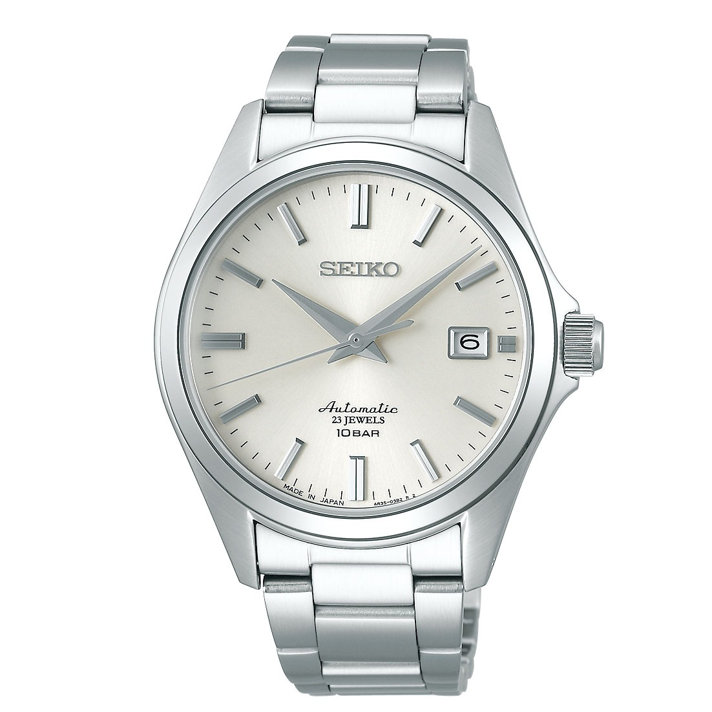
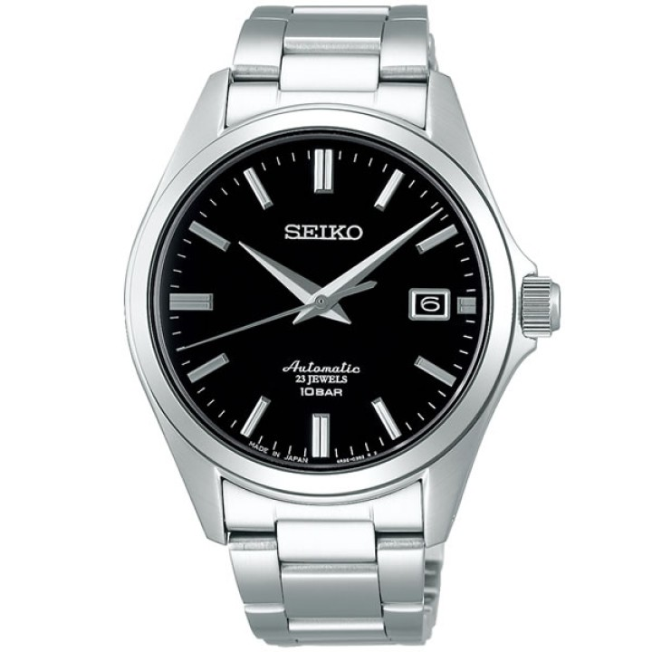
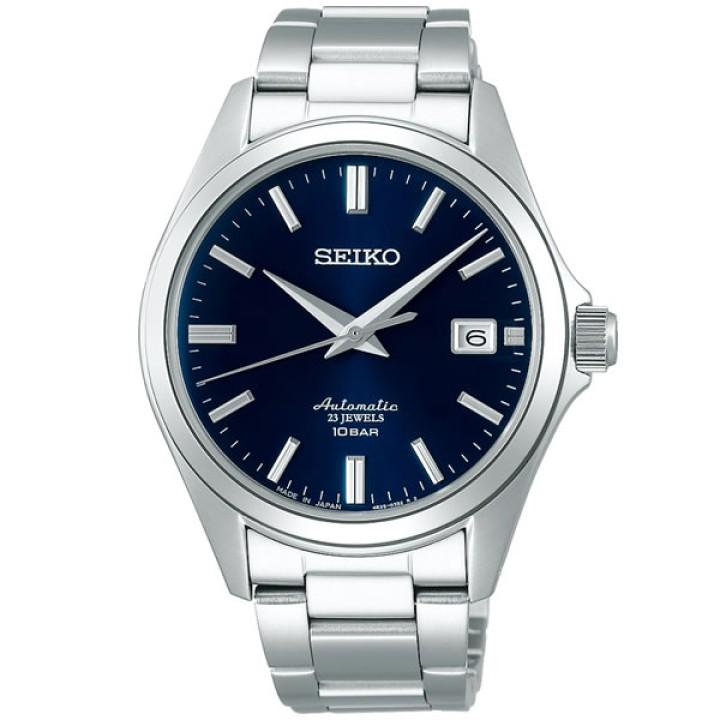
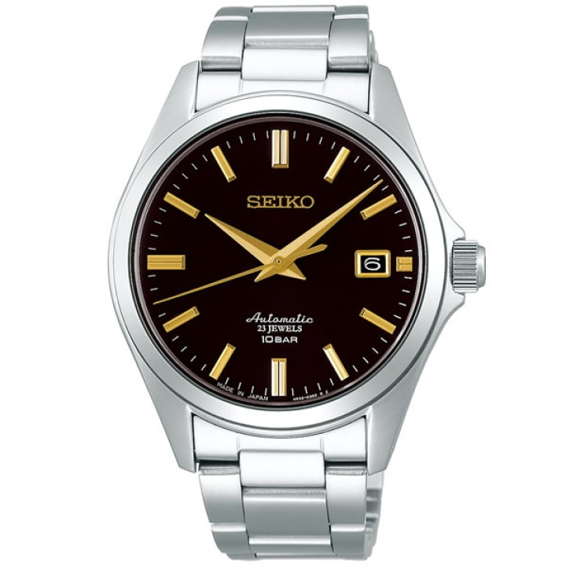

Regola generale, prima di tutto il resto: in Giappone non conviene tutto. Conviene quello che
è giapponese — perché lì il prezzo non ha dentro import, dogana e margine del distributore europeo — e
conviene l'usato, perché il mercato è enorme, regolato e con standard di conservazione molto più severi
dei nostri: un articolo classificato B da un negozio giapponese in Italia passerebbe per nuovo.
Su tutto il resto (LEGO, elettronica di marca globale, videogiochi di terze parti) tanto vale comprare a casa.
Comprate nella seconda settimana. Le tre giornate nerd (6, 11 e 12) sono quasi tutte a Tokyo e a fine viaggio: così non vi trascinate scatoloni per due settimane né li caricate sullo Shinkansen. A Osaka il Giorno 6 limitatevi a quello che a Tokyo non trovate.
Comprate nella seconda settimana. Le tre giornate nerd (6, 11 e 12) sono quasi tutte a Tokyo e a fine viaggio: così non vi trascinate scatoloni per due settimane né li caricate sullo Shinkansen. A Osaka il Giorno 6 limitatevi a quello che a Tokyo non trovate.
🏷️ Come si legge un'etichetta
- S / A ランク
Praticamente nuovo, spesso ancora imballato. Sconto piccolo: 10-20% dal nuovo. Raramente è l'affare. - B ランク
Usato ma in ordine, magari con la scatola segnata. È qui che sta il punto giusto: -30/-50% e nella pratica non si nota la differenza. - C ランク
Graffi visibili, scatola rovinata, manca un accessorio. Funziona tutto. -50/-70%. - ジャンク (junk)
La parola chiave che cercate. Venduto come visto, senza garanzia e senza reso: può essere rotto, ma molto spesso è solo estetica o manca il cavo. Prezzi da 100 a 1.000 yen. Tenetelo per le cose che sapete riparare o di cui non vi importa lo stato. - 動作確認済 / 未確認
Dosa kakunin-zumi = funzionamento verificato dal negozio. Mikakunin = non verificato. Sulle console retro guardate sempre questa riga. - 未開封 / 開封済Figure
Mikaifū = mai aperto, sigillo di fabbrica intatto. Kaifū-zumi = aperto. Da Surugaya la regola è che tutto è considerato aperto salvo scritta contraria, perché controllano la merce quando la ritirano. - 箱痛み / 欠品Figure
Hako-itami = scatola ammaccata, contenuto integro: è lo sconto migliore se la scatola la buttate comunque. Kesshin = manca un pezzo, e sulle figure sono quasi sempre le mani o gli accessori intercambiabili, che da soli non si ricomprano. - Attenzione: "rank B" non vuol dire la stessa cosa ovunque
Da Amiami il rank B è un normale usato aperto ma integro; da Surugaya il rank B vuol dire che la confezione è danneggiata. Stessa lettera, due significati. E da Surugaya i rank B, C e D sono venduti senza diritto di reclamo. - 訳あり (wake-ari)
Letteralmente "c'è un motivo": prodotto nuovo scontato per un difetto dichiarato — scatola ammaccata, confezione aperta, modello uscito di listino. È l'equivalente giapponese dell'outlet, ed è spesso la categoria più conveniente in assoluto sull'elettronica.
🏬 Le catene e cosa cercarci
- Book OffIl più economico
Manga usati da 110 yen a volume, CD, Blu-ray. Trappola da sapere: i Book Off normali vendono solo libri e dischi — per giochi, console e figure serve un Book Off Super Bazaar, che è il formato grande. Quello di Akihabara ha tutto ma è il più saccheggiato di Tokyo, perché ci passano tutti. - Hard Off / Off HouseIl junk vero
La costola elettronica di Book Off, e il posto dove esiste davvero l'angolo junk: cassoni di roba a 110-550 yen, cavi, joypad, hi-fi, portatili, console anni '90. In centro a Tokyo ce ne sono pochi — quello comodo è in Akihabara. - Surugaya · Jan-gleDa rovistare
Figure senza scatola, giochi sciolti, carte. Prezzi più bassi di Mandarake, presentazione peggiore. Jan-gle (Akihabara) è la scommessa migliore sui giochi usati: stesse cose di Book Off a qualche centinaio di yen in meno. Surugaya ha sedi ad Akihabara, Ikebukuro e Nipponbashi (Osaka). - MandarakeIl pezzo serio
Usato di alta gamma con grading rigoroso, autenticità garantita e prezzi onesti. Nakano Broadway è la casa madre: 27 negozi separati nello stesso edificio, uno per categoria. Non è un negozio, è un labirinto — leggete l'insegna prima di entrare. - AmiamiFigure nuove scontate
Il negozio di figure di Akihabara che vende il nuovo sotto listino (tipicamente -10/-25%), più un piano di usato con la classificazione più chiara del Giappone. È il posto giusto se volete una figure nuova e non vi interessa cercarla usata. - Sofmap · Janpara · Iosys · PC Koubou · TsukumoTech
Portatili, smartphone, componenti e periferiche, nuovi e usati, tutti concentrati ad Akihabara con il grado di usura in etichetta. Tsukumo ha il piano tastiere degli appassionati (livello -1). - Super Potato · Beep · Trader · Retro Game CampRetrogaming
Super Potato è il più famoso, il più fotografato e il più caro: è su tutte le guide e i prezzi lo sanno. Beep e Trader hanno gli stessi pezzi a meno. A Osaka la stessa roba in Den Den Town costa mediamente meno che a Tokyo. - Animate · Kinokuniya · Yamashiroya · Yodobashi · Bic CameraNuovo
Animate per manga e gadget nuovi (il flagship di Ikebukuro è enorme), Kinokuniya per libri e art book, Yamashiroya sei piani di giocattoli davanti alla stazione di Ueno, Yodobashi Shinjuku spalmato su otto edifici uno per categoria.
🎮 Switch e Switch 2
- Le cartucce girano, sia Switch che Switch 2Il punto
Nintendo ha confermato che anche le schede di gioco Switch 2 non sono region-locked: una copia comprata a Tokyo parte su una console europea. Il limite vero non è la regione, è la lingua — e si controlla sul retro della scatola, dove le lingue supportate sono elencate. In alternativa, sulla console: Impostazioni → Informazioni software → Informazioni di supporto. - Il paradosso da tenere a mente
I titoli Nintendo first-party (Mario, Zelda, Pokémon, Kirby) sono quasi sempre multilingua italiano incluso, e sono quindi gli unici che ha senso portarsi a casa. Ma sono anche quelli che l'usato sconta di meno: Nintendo tiene il prezzo, e da Book Off un first-party recente sta 500-1.500 yen sotto il nuovo e basta. Il resto del catalogo è scontato del 40-60%… ed è quasi tutto solo in giapponese. Fate pace con l'idea: si compra nuovo, e si risparmia lo stesso. - Nuovo: qui il risparmio c'è ed è grossoNuovo
Un gioco Switch 2 di punta costa 9.980 ¥ in Giappone, cioè circa 53 €. Lo stesso gioco in Europa sta a 89,99 €. Sono trentacinque euro a titolo, e con il tax-free sopra i 5.000 yen ne recuperate un altro 9%. Su tre o quattro giochi vi ripagate una giornata di viaggio. - ⚠️ Le Game-Key Card: la novità che fregaDa controllare
Su Switch 2 esistono schede che non contengono il gioco, solo un permesso di scaricarlo. Si riconoscono da due segni sulla confezione: un'icona a forma di chiave in alto a destra sulla card e una fascia bianca in fondo alla custodia. Servono internet al primo avvio, spazio libero sulla console (la quantità è stampata sulla scatola) e la card deve restare inserita per giocare. Non sono legate a un account, quindi si rivendono — ma il giorno che Nintendo spegne i server diventano un pezzo di plastica. Nintendo dice che non le userà per i propri titoli: è un formato da editori terzi. Se volete il gioco sulla cartuccia, cercate le due marcature ed evitate. - ⚠️ La console giapponese a 50.000 yen non compratelaTrappola
Se in negozio vedete una Switch 2 a 49.980 ¥ (~267 €) contro i 69.980 ¥ (~374 €) dell'altra, non è un affare: è il modello per il solo mercato interno, in giapponese, region-locked e che pretende un account Nintendo giapponese. È l'unico prodotto Nintendo su cui la regione conta davvero. La versione multilingua costa 20.000 yen in più e a quel punto tanto vale comprarla in Italia. I giochi sì, la console no. - Il digitale non è più una scorciatoia
Dal marzo 2025 l'eShop giapponese rifiuta le carte di credito estere e PayPal, e le gift card eShop sono vincolate alla regione. L'arbitraggio digitale, che una volta funzionava, oggi è chiuso. Vale solo il fisico. - Dove, in ordine di convenienzaGiorni 6, 11, 12
Usato: Jan-gle e Surugaya ad Akihabara, Book Off Super Bazaar, Trader (che ha anche un reparto di console testate con garanzia del negozio), Mandarake Galaxy a Nakano. Nuovo: Yodobashi e Bic Camera, dove il tax-free è automatico e la fila è organizzata. - Le altre console, in breve
PS4 e PS5: dischi region-free, ma DLC e codici sono legati all'account giapponese e non si riscattano. 3DS e DS: region-locked, un gioco giapponese non parte su console europea — prendeteli solo se prendete anche la console.
👾 Retrogaming e Game Boy Color
- Il Game Boy è la scelta giustaComprate qui
Di tutto il retrogaming è quello che ha più senso portarsi via: sta in tasca, va a pile — quindi niente problema dei 100 volt — e le cartucce Game Boy non hanno blocco regionale, per cui un gioco giapponese gira su qualsiasi GBC o Game Boy Advance europeo. Un console funzionante da Hard Off sta sui 3.000 yen (~16 €), i pezzi nell'angolo junk partono da 1.000 yen o meno. - Non compratelo da Super PotatoDove
Super Potato è bellissimo da visitare e ha i prezzi da guida turistica: lì un Game Boy Color costa il doppio o il triplo. Andateci a vedere e a farvi un'idea dei modelli, poi comprate nell'angolo junk di Hard Off, da Beep, da Retro Game Camp o a Den Den Town. Se serve una frase per orientarvi: Radio Kaikan e Super Potato servono a guardare, Hard Off e Surugaya a comprare. - Controllo n.1: il vano batteriePrima di tutto
Apritelo sempre, prima ancora di accendere. Se vedete crosta bianca o verde, le batterie hanno perso acido e la corrosione può aver mangiato la scheda: è il guasto che rende il pezzo non riparabile. Un "non si accende" con il vano pulito vale più di un "funziona" con la crosta verde, perché il primo di solito è solo l'interruttore ossidato. - Gli altri sei controlli, in ordine
1. Righe verticali o orizzontali sullo schermo = flat cable dell'LCD scollato, è un lavoro di saldatura. 2. Immagine debole o tremolante = condensatori esausti, non l'LCD (su un pezzo mai revisionato hanno tutti superato i quindici anni di vita). 3. La rotella del contrasto deve girare fluida e cambiare davvero l'immagine. 4. Provate sia l'altoparlante sia la presa cuffie: si guastano separatamente. 5. Infilate e togliete più di una cartuccia, per capire se il problema è lo slot o il gioco. 6. Fate scorrere l'interruttore di accensione dieci o quindici volte: se dopo un po' parte, era solo ossidazione. E se allo spegnimento resta un'immagine impressa per un istante, è normale, non è un difetto. - I giochi retro: i prezzi non sono più quelli
La favola del Giappone dove i giochi vecchi si trovano a due yen è finita da un pezzo: i titoli noti hanno prezzi da collezionismo internazionale. Quello che resta davvero a poco sono i giochi sfusi senza scatola nei cassoni (200-500 yen l'uno) e i titoli mai usciti da noi, che è poi il motivo vero per comprarli lì. - Console da salotto: leggete prima questo
Famicom e Super Famicom hanno cartucce fisicamente diverse da NES e SNES europei, il segnale è NTSC e l'alimentatore è a 100 volt. Per giocarci in Italia servono la console giapponese più un trasformatore più un televisore o uno scaler che digerisca il 60 Hz. Bellissime da collezionare, scomode da usare. Il Game Boy tutto questo non ce l'ha. - La regola dei 100 volt, in generale
Quasi tutti i caricatori moderni accettano 100-240V (c'è scritto sul mattoncino) e serve solo l'adattatore di spina. Tutto il resto — console retro, piccoli elettrodomestici — è solo 100V e in Europa gira sottoalimentato o non gira. La garanzia comunque non vale fuori dal Giappone.
📚 Manga
- Il nuovo costa la metà — ma il prezzo è identico ovunqueNuovo
Un tankōbon nuovo in Giappone sta fra 500 e 600 yen, cioè 2,70-3,20 €, contro i 5,50-8 € dell'edizione italiana. Il motivo per cui non serve girare a cercare offerte è il saihan seido: per legge l'editore fissa il prezzo di copertina e nessun negozio può scontarlo. Animate, Kinokuniya, la libreria della stazione e Amazon.co.jp costano esattamente uguale. Comprate dove capita, e scegliete il negozio per l'assortimento, non per il prezzo. - L'unico sconto possibile sul nuovo è il tax-free
Siccome il prezzo è blindato, il solo modo di pagare meno è superare i 5.000 yen nello stesso negozio (una decina di volumi) e chiedere il tax-free: circa il 9% indietro. Vale nelle catene registrate — Animate, Kinokuniya, i piani libri di Yodobashi e Tsutaya. - La cosa scomoda da dire: sono in giapponeseAspettativa da correggere
Non esiste il manga in italiano, e le edizioni in inglese in Giappone sono rare e più care di quelle italiane, perché sono importate. Quindi un manga comprato lì è un bell'oggetto e un souvenir, non una lettura — a meno che non sia una serie che già conoscete e che seguite per le tavole. Meglio saperlo prima di riempire una valigia di volumi che resteranno chiusi. - Quello che invece funziona benissimo senza sapere il giapponeseIl consiglio
Gli art book (画集, gashū): raccolte di illustrazioni degli autori, stampa e carta di livello altissimo, 2.500-4.000 yen, e in Europa o non arrivano o costano il triplo. Stesso discorso per i volumi celebrativi, i databook e le edizioni kanzenban (copertina rigida, pagine a colori, carta pesante). Sono libri che si guardano: la lingua non è un problema. - Usato: 110 yen a volume, e i set completiUsato
Il prezzo fisso vale solo sul nuovo, quindi l'usato è completamente libero — ed è il motivo per cui da Book Off un volume parte da 110 yen (60 centesimi) in condizioni che da noi passerebbero per nuove. Cercate i 全巻セット (zenkan setto): serie complete vendute in blocco, dove il singolo volume scende ancora. A Mandarake Nakano, terzo piano, c'è invece il fuori catalogo e le prime edizioni, e si trovano scaffali a 100 yen o tre volumi per 200. - Come si trova qualcosa negli scaffali
Le librerie giapponesi sono ordinate per cognome dell'autore in kana, non per titolo: senza il nome scritto in giapponese non trovate niente. Salvatevi sul telefono i titoli che vi interessano in caratteri giapponesi prima di partire, così li mostrate al commesso o li confrontate con il dorso. Il numero del volume invece è in cifre arabe sul dorso, quello si legge. - Il peso
Dieci volumi sono circa due chili. È la categoria che manda in crisi la valigia più in fretta di tutte, con un valore per chilo bassissimo. Se prendete tanto, valutate una spedizione dalla posta giapponese invece del bagaglio.
🧸 Action figure
- Le prize figure: la cosa che in Europa proprio non esisteIl vero affare
Le プライズ (prize) sono le figure prodotte per le macchine acchiappa-premi delle sale giochi: Banpresto, SEGA, Furyu. Non vengono vendute al dettaglio in Giappone e non vengono esportate, quindi in Italia si trovano solo da importatori a 30-50 €. Lì finiscono nuove e ancora in scatola nei negozi dell'usato a 1.500-2.500 yen (8-13 €), e la qualità negli ultimi anni è arrivata a livelli che dieci anni fa erano da figure in scala. Book Off Super Bazaar, Surugaya e Mandarake ne hanno pareti intere. Se dovete comprare una cosa sola in questa categoria, comprate queste. - Nuovo di listino: si risparmia, ma meno di quanto si diceNuovo
Una Nendoroid di listino sta sui 6.000-8.000 yen (32-43 €) e in Italia la stessa figure va dai 45 ai 65 €; una S.H.Figuarts sta sui 7.000-9.000 yen contro i 60-90 € da noi. Il ricarico europeo è reale — nell'ordine del 40-80% — ma sono trenta o quaranta euro a pezzo, non il doppio. Da Amiami ad Akihabara il nuovo è già scontato del 10-25% sul listino, ed è il posto giusto per comprarne una nuova senza cercarla usata. - Le esclusive web e negozioNuovo
Un pezzo delle linee Bandai e Good Smile esce come 魂ウェブ商店限定 o event exclusive: mai distribuito fuori dal Giappone, e in Europa o non c'è o costa il doppio sul mercato secondario. Il Tamashii Nations Store di Akihabara, il Kotobukiya di Akihabara, Volks e il Gundam Base (già in programma al Giorno 14) hanno ognuno le proprie esclusive di negozio. È l'unica categoria dove il "l'ho preso lì e qui non c'è" è letteralmente vero. - Usato: dove sta il -50%Usato
Una figure aperta ma integra scende della metà, e 箱痛み (scatola ammaccata, contenuto perfetto) è lo sconto migliore in assoluto se la scatola non vi interessa. Mandarake è il posto dove il grado dichiarato corrisponde e l'autenticità è controllata; Surugaya costa meno ma è più ruvido, e i suoi rank B/C/D si comprano senza diritto di reclamo. A Nakano Broadway le figure stanno soprattutto in Special 4 (2° piano, che copre anche gacha e prize) e nelle altre annex Special. - Cosa controllare in negozio
Che ci siano tutte le mani e gli accessori intercambiabili — sono i pezzi che spariscono, sono minuscoli e da soli non si ricomprano — e che le articolazioni non siano lasche. Sulle figure di dieci o più anni la plastica morbida può diventare appiccicosa: è degrado del materiale, non sporco, e non si risolve. Nei negozi in vetro chiedete di vedere il pezzo aperto: lo fanno. - I falsi
Nelle catene registrate il rischio è basso, il problema riguarda i mercatini e l'online. La regola vale comunque: un prezzo assurdamente basso su un pezzo ricercato è un falso. Prima di spendere su qualcosa di importante, MyFigureCollection vi dà listino e foto ufficiali, Suruga-ya online il prezzo di mercato reale. - Il problema vero è il volumeBagaglio
Una figure in scala è una scatola da 30 cm che pesa quasi niente ma occupa mezza valigia, e schiacciarla vuol dire rovinarla. Con 7 kg di bagaglio a mano il vincolo non è il peso, è lo spazio. Decidete prima quanto volume potete permettervi, o mettete in conto la spedizione.
⌨️ Tastiere e mouse
- Le tastiere Topre sono il caso migliore di tutta la paginaConviene
HHKB (PFU) e Realforce (Topre) sono prodotti giapponesi che in Europa arrivano col contagocce e col ricarico dell'importatore. Una HHKB Professional Hybrid Type-S sta intorno ai 36.000-37.000 yen in Giappone (~195 €); in Europa la stessa tastiera viaggia sui 320-390 €. Realforce è messa anche peggio: distribuzione europea quasi inesistente, quindi si paga quello che chiede il rivenditore. Con il tax-free si scende ancora del 9%. È il pezzo di tecnologia che ha più senso comprare lì. - ⚠️ Il layout: l'errore che non si torna indietroDa verificare
Il mercato giapponese vende soprattutto layout JIS, che ha barra spaziatrice corta (ci stanno due tasti in più per l'input giapponese), Invio a L rovesciata su due righe e diversi simboli spostati — la @ per prima. Per scrivere in italiano è scomodo, e i keycap di ricambio JIS fuori dal Giappone non esistono. Riconoscerlo è banale: Invio largo e rettangolare = US/ANSI, Invio alto a L = JIS o ISO. In negozio chiedete la versione 英語配列 (eigo hairetsu, layout inglese) e controllate la sigla: su HHKB Type-S bianca, PD-KB800WS è la US, PD-KB820WS è la giapponese. - Yushakobo — il negozio da vedereAkihabara
遊舎工房, nelle stradine a nord di Akihabara: il primo negozio giapponese dedicato alle tastiere custom (2019). Kit, switch sfusi, keycap, un banco dove monti la tastiera sul posto e un distributore a capsule di switch all'ingresso. Ma sappiate cosa comprate: la maggior parte delle tastiere lì sono kit senza switch e senza keycap, da assemblare e spesso da saldare. Se volete una tastiera che funziona appena aperta, non è questo il posto. Sito in inglese: shop.yushakobo.jp. È piccolo e sempre pieno. - Dove comprare quelle già montate
Tsukumo (piano -1) è il riferimento per HHKB e Realforce, con i modelli in prova. Yodobashi Akiba ha il muro di tastiere da provare più grande della città e il tax-free organizzato. Poi Bic Camera, Sofmap, Ark e i negozi di componenti sulla Chuo-dori per Filco, Leopold, Archiss e Keychron. Se un modello specifico non si trova, Amazon.co.jp consegna in giornata se ordinate la mattina — anche in hotel, avvisando la reception. - La garanzia resta in Giappone
Un pezzo comprato lì non è coperto dai programmi di assistenza europei del produttore. Su una tastiera meccanica è un rischio accettabile; su un portatile o uno smartphone molto meno. - I mouse: qui il vantaggio è più sottile
Logitech, Razer e Corsair costano uguale o di più che in Italia, perché sono marchi globali. Quello che si trova solo lì sono i marchi giapponesi — Elecom (compresi i trackball, che hanno un seguito), Buffalo, Sanwa Supply — e la roba 訳あり in outlet da Sofmap e Janpara. Yodobashi e Bic Camera hanno interi tavoli di mouse da provare a mano, che è già un motivo per passarci.
💰 Sconti: dove sono e dove non sono
- Il tax-free è lo sconto principale — ma dal 1º novembre 2026 funziona diversamenteRegola nuova
La soglia resta 5.000 yen di spesa nello stesso negozio e nello stesso giorno, e serve il passaporto fisico alla cassa, non la foto. Quello che cambia, un mese prima della vostra partenza, è il quando: l'IVA non viene più tolta in cassa, la pagate e la recuperate in aeroporto alla partenza. Il negozio vi dà uno scontrino con un QR code, al banco rimborsi di Narita scansionate passaporto e codice e scegliete se farvi accreditare la somma sulla carta o darvela in contanti. L'importo non cambia: circa il 9% del prezzo pagato (un undicesimo).
Due conseguenze pratiche: conservate tutti gli scontrini e tenete la merce accessibile, perché la dogana può chiedere di vederla. In compenso cade la vecchia distinzione fra beni di consumo e beni generici, quindi niente più sacchetti sigillati da non aprire. - Punti sì, ma non insieme al tax-free
Yodobashi e Bic Camera danno il 10% in punti, ma se chiedete il tax-free la percentuale di solito scende molto. In genere sull'elettronica cara conviene il tax-free, sui piccoli acquisti i punti — e i punti si spendono solo lì, quindi valgono soltanto se comprate più volte. - LEGO: mettetevi il cuore in paceAspettativa da correggere
Il LEGO in Giappone costa più che in Italia: è importato e i prezzi di listino sono alti. Le uniche eccezioni sono i set fuori produzione a Yamashiroya, il LEGO usato o sfuso da Book Off e Hard Off, e i cassoni di fine serie da Don Quijote. La cosa che invece conviene davvero comprare lì sono i nanoblock (Kawada): mattoncini più piccoli del LEGO, set giapponesi da 800-2.000 yen introvabili qui. - Il criterio in una riga
Conviene ciò che è prodotto o distribuito solo in Giappone (manga, prize figure, HHKB, esclusive Bandai, giochi Nintendo) e conviene l'usato in generale. Non conviene niente di globale comprato nuovo: LEGO, Apple, Logitech, videogiochi di terze parti multipiattaforma. - Un controllo veloce prima di spendere
Per i pezzi importanti, mercari.jp e Suruga-ya online vi dicono in trenta secondi se il prezzo del negozio è nella norma; per l'elettronica nuova c'è kakaku.com, che incrocia tutti i negozi giapponesi. Nei negozi di usato però il pezzo è uno solo: se il prezzo è giusto, non tornate domani. - Contanti
I negozi grandi prendono carta, i banchi dell'usato, i piccoli retrogaming e le annex indipendenti di Nakano spesso no. Tenete sempre 10-20.000 yen in tasca nelle giornate di shopping.
⌚ Un Seiko da riportare

Il souvenir "serio" del viaggio. Modello deciso: Seiko SZSB011 — quadrante avorio, lancette dauphine argentate, automatico, 39,9 mm. È JDM e per giunta a distribuzione solo online: in Italia non esiste un prezzo di listino, e chi lo importa lo rivende a 350-420 € dazi compresi. In Giappone si prende a 115-280 €. È il caso raro in cui comprare lì conviene davvero, non per lo sconto ma perché è l'unico posto dove il prezzo è quello vero.
- Perché proprio questoIl modello
Seiko Mechanical Dress Line, ed è JDM: in Europa non è mai arrivato. Quadrante avorio con indici applicati rifiniti a raggiera e logo applicato, lancette dauphine con una faccia lucida e una spazzolata — in Giappone lo chiamano ベイビーGS, "Baby Grand Seiko". Calibro 4R35 automatico con carica manuale e stop-secondi, 41 ore di riserva, 100 m, fondello a vista, Made in Japan. - I compromessi, detti chiaramente
Vetro Hardlex bombato e non zaffiro, precisione dichiarata +45/−35 secondi al giorno, niente lume, maglie terminali del bracciale cave. L'alternativa "seria" era il SARB035 — zaffiro, calibro 6R15, 38 mm — ma è fuori produzione dal 2018, sull'usato costa 430-700 € ed è pieno di esemplari riassemblati con pezzi non originali. Colore del quadrante identico, prezzo triplo. - Il trucco: in Giappone non è in vetrinaDa sapere
Non è un modello da catalogo: Seiko lo distribuisce solo sui canali online (Amazon.co.jp, Rakuten, Yahoo Shopping). Da Yodobashi, Bic Camera o nelle boutique Seiko di Ginza non lo troverete. La spiegazione che circola fra i collezionisti giapponesi è che somigli troppo a un Grand Seiko per poterlo mettere sullo stesso banco. Il che cambia tutto il resto: nuovo vuol dire ordinarlo online e farselo mandare in hotel, usato vuol dire andarlo a cercare a Nakano. - Nuovo — 226-282 €, ma senza tax-free
Listino 52.800 ¥ (~282 €), prezzo di strada online da 42.000 ¥ (~226 €): conviene confrontare su kakaku.com, che incrocia tutti i negozi giapponesi. Comprato online però l'IVA giapponese la pagate e basta, perché il tax-free richiede il passaporto alla cassa di un negozio fisico. Anche così restate oltre 100 € sotto il prezzo di importazione in Italia, con la garanzia Seiko giapponese. Unica accortezza: avvisare l'hotel che arriverà un pacco, e ordinarlo con qualche giorno di margine. - Usato — 115-170 €, e qui il tax-free c'èGiorno 12
Alle aste giapponesi gli esemplari in buone condizioni con bracciale completo vanno a 21.000-32.000 ¥. In negozio si cerca a Nakano Broadway — Jack Road (3° piano), TWC e Komehyo — che è già in programma al Giorno 12, e sono tutti negozi registrati, quindi il rimborso si prende. Controllate le disponibilità sui loro siti prima di partire: se il nuovo online sta a 42.000 ¥, un usato sopra i 35.000 non ha senso. - Non sbagliate fratello
La serie ha quattro colori sulla stessa identica cassa, e il codice sul fondello — 4R35-03X0 — è comune a tutti: non distingue il quadrante. L'unica cosa che lo identifica è la sigla SZSB0xx sul cartellino. Nelle foto delle inserzioni si confondono facilmente, e il 014 in particolare ha le lancette dorate.SZSB011
avorio ✓
SZSB012
nero
SZSB013
blu
SZSB014
marrone, lancette oro - Sull'usato, cosa guardare
Che sia funzionante — nelle aste girano parecchi pezzi guasti o venduti per ricambi — che ci siano tutte le maglie del bracciale, e che il fondello a vista sia limpido. Il bracciale ha la regolazione senza attrezzi, quindi la taglia si sistema da soli anche senza il servizio del negozio. - Quanto vale il tax-free, in concreto
Circa il 9% del prezzo pagato (un undicesimo): ~2.700 ¥ su un usato da 30.000. Da novembre 2026 non è più uno sgravio in cassa ma un rimborso in aeroporto, quindi in negozio pagate tutto e recuperate al banco prima del volo — tenete lo scontrino e l'orologio a portata di mano per l'eventuale controllo doganale. Sull'acquisto online invece non si applica: è il prezzo di listino ad essere già basso.
Le tre giornate in cui vi servirà tutto questo:
Giorno 6 (Den Den Town, Osaka — meno turisti, prezzi più bassi, ottimo per retrogaming),
Giorno 11 (Akihabara di domenica: giochi, tastiere, figure nuove — la più densa) e
Giorno 12 (Nakano Broadway: manga fuori catalogo, figure usate, l'orologio).
Nakano apre alle 10 ma i negozi dei piani alti aprono a mezzogiorno, e alcuni chiudono il mercoledì:
arrivarci verso le 12:00-12:30 e mettere in conto tre ore.
Se comprate qualcosa di ingombrante, ricordate che avete solo 7 kg di bagaglio a mano con Qatar
— e che la posta giapponese spedisce in Italia a prezzi ragionevoli.